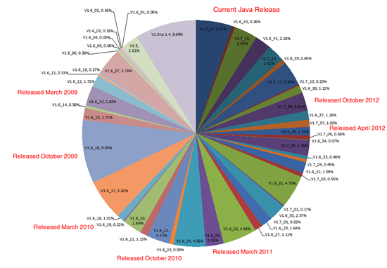

Security breach in Java
What is Java?
Java is a programming language that is interpreted when the program is accessed, as such; it gained vast popularity and had been used in the early day of the World Wide Web when browsers were not as sophisticated as they are today. It is a language that can run on multiple hardware platforms and Operating Systems (OS). It allowed developers to write an application once and run on Apple Mac OS X, Microsoft Windows, Linux and other platform such as set top box, intelligent video recorder and even phones. It usually requires an external application from the Web browser know as a Java Virtual Machine.
Is Java the same thing as JavaScript?
No they are not; JavaScript is a programming language dialect derived from ECMAScript[1], a language standardized by an international body known as EMCA. It is directly integrated in most browsers today and as such does not require an external helper application like the Java VM. Since it is integrated to the web browser, your browser vendor supports it, as opposed to the Java VM that was created by Sun and is now owned by Oracle. Oracle is the sole provider of the Java VM to run Java application.*
How is Java used by INTEGRA e-business™?
When JBM Logic Inc. started the development of INTEGRA in the early 1990’s, little did it know that Java would become the main platform for running INTEGRA e-business™. The programming tools used back then were: Oracle Forms and Reports in a character mode running against an Oracle database. Windows was still a pipe dream and all serious applications ran under DOS or Unix in character mode.
Oracle Corporation had the foresight to see where the future of the computer industry was heading and created a Windows version of Oracle Forms & Reports, allowing JBM to offer the first Windows based ERP in 1991. Then again in 1998, Oracle once again moved its Forms & Reports developer tools to the Internet age and JBM was the first to offer an ERP application that was running under Java within a Web browser.
That was the time when INTEGRA e-business™ began using Java so that INTEGRA e-business could be used by different operating systems and did not require installing any program on the client machine as the application processing was done on an application server that itself was talking to the Oracle database. The client software simply ran the interface under a Java virtual machine (JVM). In these day and age there were very little hackers trying to steal credit cards and password from unsuspecting users.
The Oracle Forms & Reports tools used by JBM to develop INTEGRA e-business thus far had been rolled up by Oracle into a product that is now called Fusion Middleware for which the latest version is 11g.
You might be aware that there were numerous zero day exploits of the Sun/Oracle Java Runtime Engine (also called Java VM or JRE) in the recent months and might wander if you are endangered by these exploits?
You might be at risk.�
Close to 94% of all web browsers in a recent study are found to be vulnerable to attack. If you did not update your Java VM to the latest version, you run the risk of visiting a maliciously crafted web site that might access your computer without your prior consent.
Java versions all over the map
“The above graphic shows that Java versions are all over the map. At the time of this writing, the latest Java Runtime Environment is 1.7.17, but only about five percent of the overall mix are using it. Most versions are months and even years out of date. How does this translate into the attack space? It is probably no surprise that the largest single exploited vulnerability is the most recent one, with a vulnerable population of browsers at 93.77%.” [2]
The threat is so real, that the American government made a recommendation to all Java users to uninstall Java from their computer or disable it. “…Department of Homeland Security’s US-CERT warned users to disable Java to stop hackers from taking control of users’ machines.”[3] And then Apple and lately Microsoft tried to help in blocking older version of Java from running with their operating system/browser. These action added confusion and disruption to an already clouded issue.
What version is affected?
There were multiple versions of Java families, the two latest of interest to INTEGRA e-business™ users are: 1.6.x and 1.7.x. Java 1.6 has reached End of Life as of February 28th, 2013. As part of your Oracle support from JBM Logic Inc., you will continue to have access to the most recent version of Java 1.6.x understanding that there will be no more active development on this platform and that migration to Java 1.7.x is strongly recommended.
When does Java 6 Error Correction Support end for publicly available releases?
Public release Error Correction Support will end in February 2013. This means that no additional public releases of Java 6 will be made available after February 2013 for non-Oracle customers. Oracle customers using Java 6 in conjunction with other Oracle products like Forms, Discoverer, or other Fusion Middleware components will continue to receive support for using Java 6 as long as the product requiring it remains eligible for Error Correction Support (aka Premiere Support). After February 2013, only customers with active Oracle Support (MOS) will be able to obtain new updates provided for Java 6 (e.g. CPUs, critical defect fixes, etc) if any become available. Again, these releases will only be supported for use with another Oracle product, which requires its use. Use of Java 6 with non-Oracle products will not be supported after February 2013.[4]
Does this impact the certification with other Oracle products like Fusion Middleware 11 (e.g. Forms, Discoverer, etc.) under which INTEGRA e-business run? No – as mentioned previously, other Oracle products, which require Java 6 will continue to be supported, using Java 6 (on the client and server) until the other Oracle product is no longer supported.
There is a caveat here since the prior version of Oracle Fusion Middleware called 10g was composed of multiple product bet the most recent version of that version called Release 3 did not contain Forms & Reports, so Fusion Middleware 10g Release 2 is the latest version prior of the 10g version and will be de-supported by…. This means that there is a strong sense of urgency on moving to INTEGRA 6.10.14 under Oracle 11g application server and database. These new version of Oracle infrastructure are certified under Microsoft Windows Server 2008 release 2, that was released in 2010. At this point no other version of Microsoft Windows Server operating system is supported.
What are the benefits of installing the latest version or the Oracle DB and Application server?
An added benefit of moving to the latest version of Oracle infrastructure and INTEGRA e-business is the full support of 64 bits. The Database server, the Application server, INTEGRA e-business executable and even the Java client are now 64 bits.
What are the benefits of running under a 64 operating system?
On the database server, it allows Windows to address directly more than the original limitation of 2Gb that the platform was limited to. Having more memory will allow Oracle to address a larger SGA and improve the performance of all operation in the database from saving data to running reports. The added resources allow the operating system to run with more elbowroom and not so close to its limit insuring a better stability. Using INTEGRA e-business with a true 64-bit architecture will give your organization a more robust architecture that will save user time and aggravation.
Would there be benefits in doing these upgrades to virtualize the servers? Virtualization is a technology that allows a server to run multiple operating systems called Virtual Machine. The operating system themselves are not aware that they don’t have the server to themselves, and for all programs and users, it is totally transparent. Its main benefits are: to allow machine to stop and started individually without having to stop server, to consolidate multiple OS running on a single computer, to simplify backup/recovery and allow for easier redundancy in case of failure.
What virtualization platform supports an INTEGRA e-business™ and Oracle architecture? JBM has experience with VMware and Oracle’s own VM called Virtual Box. As these configurations could vary based upon the desired recovery requirements, you should talk with JBM’s technical consultant to elaborate on your company’s options.
Jean-Francois Brodeur
President
JBM Logic
[1] Wikipedia article, http://en.wikipedia.org/wiki/ECMAScript
* That is not technically correct, since Apple had been providing Java VM and still do for Mac OS X until version 10.7 (Lion), starting with 10.7, Oracle provides the JVM.
[2] Websense Security blog, How are Java attacks getting through? Posted: 25 Mar 2013 09:01 PM
[3] Slashdot blog, Posted by samzenpus on Monday January 14, 2013 @01:25PM
[4] What Impact does the De-support of Java 6 have on Fusion Middleware 11 (FAQ) [ID 1470123.1], Oracle Corporation, April 2nd 2013.


{kind=link}
{kind=link}
{kind=link}
{kind=link}
{kind=link}
{kind=link}
{kind=link}
{kind=link}
{kind=link}
{kind=link}
{kind=link}
{kind=link}